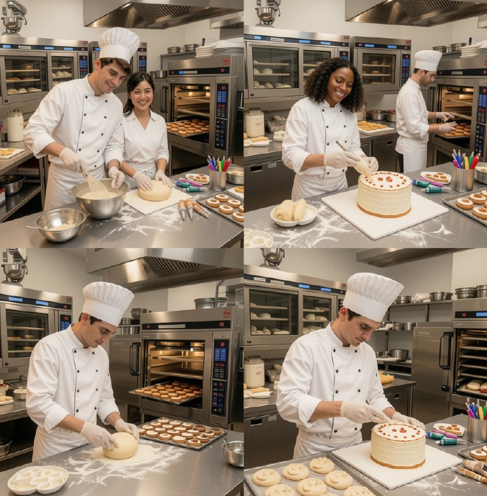
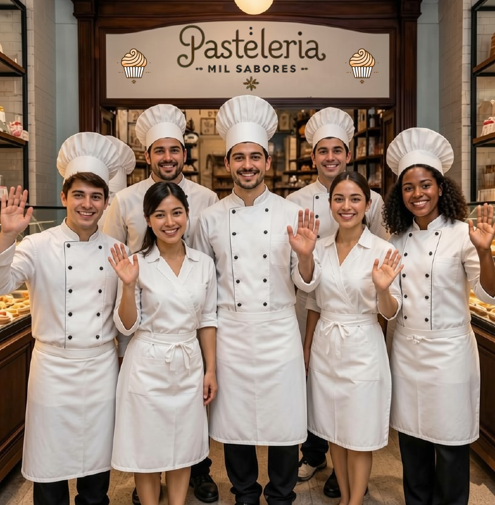
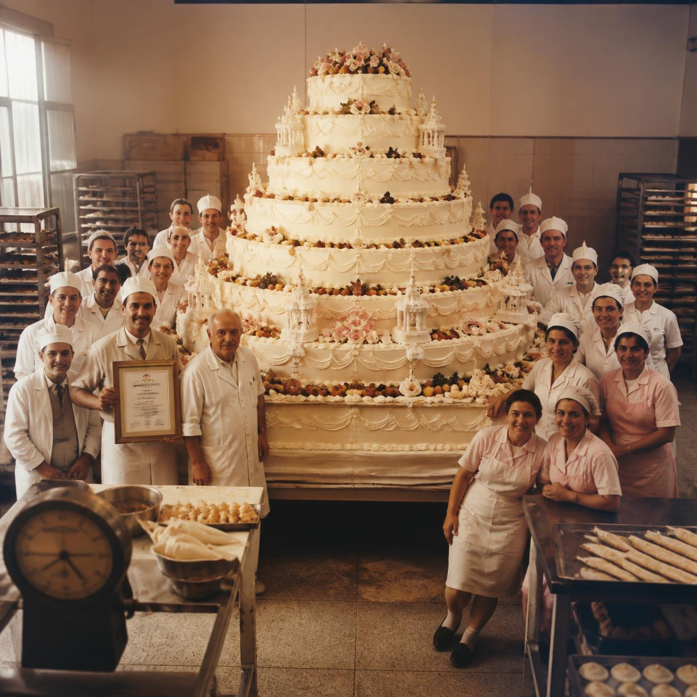
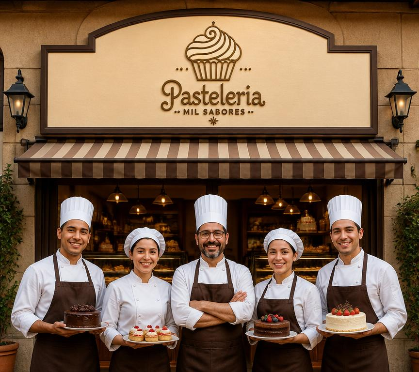

Nuestra Historia & Pasión
Más de 50 años de tradición. Conoce los ingredientes de calidad, los momentos dulces y el equipo que hace magia en nuestro horno cada día.
Misión
Crear momentos inolvidables a través de la repostería artesanal, combinando ingredientes de la más alta calidad con recetas tradicionales e innovadoras que deleiten a cada uno de nuestros clientes en Pastelería Mil Sabores.
Visión
Ser reconocidos nacional e internacionalmente como la pastelería referente en innovación, calidad y tradición, llevando dulzura y sonrisas a cada hogar con responsabilidad y amor.
Orgullo de Récord Guinness
En el año 1995 marcamos un hito histórico al elaborar el pastel más grande de la región, logrando un Récord Guinness oficial. Este logro refleja la entrega, técnica y pasión de todo nuestro equipo, una tradición de excelencia que mantenemos viva hasta el día de hoy.
Detrás de Cámara
Un vistazo a nuestra cocina, eventos y momentos especiales (haz clic en cualquier foto para ampliarla).

Nuestra Cocina Artesanal
El Equipo Pastelero
El Día del Récord Guinness (1995)
Detalles Hechos a Mano